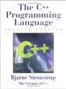
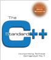
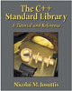

C++初学者应该关心的优秀图书一览-hxzon爱读书
|
文章作者：bigpanda 文章来源：JAVAEYE
1.The C++ Programming Lanuage, by Bjarne Stroustrup, Speical 3rd edition，Addison Wesley
 http://bp1.blogger.com/_SneKqDXpm5Q/RYR9sI1PuLI/AAAAAAAAAAM/IWlPNh_omSY/s320/1.jpg 这是C++创始人B教主之力作，描述C++语言之经典一书。这本书第三版是97年出的，B教主老人家给这本书开了个网页http://www.research.att.com/~bs/3rd.html，2000年，又出了个Special 3rd edition，和97年的第三版相比，多了两个Appendix，这两章在网页上可以下载，除此之外，还改了1000多个小错误。我说B教主你老人家小错误犯的也太多了吧，为什么不像Knuth老人家学习学习，人家多严谨那。要把这本书当参考手册，还得去买2000年那个版本的。 B教主总共写了三本书，The C++ Programming Language，The Design and Evolution of C++，The Annotated C++ Reference Manual，加上翻译本合起来卖了上百万多份那，厉害厉害。  http://bp1.blogger.com/_SneKqDXpm5Q/RYR90I1PuMI/AAAAAAAAAAU/JUmyeWliNYg/s320/2.jpg 2. The C++ Standard, Wiley，ISBN:0-470-84674-7 这本书是C++语言标准，C++的语法太繁琐，所以有些吃不准的地方，还是得翻这本书。厚厚一本书，700多页，但是用的纸非常轻，拿起来不沉。就是装订的不好，书脊有点松松散散，让人担心看多了某天书会散架。 3. C++ Templates, The Complete Guide，by Vandevoorde, Josuttis，Addison Wesley, ISBN:0-201-73484-2  http://bp0.blogger.com/_SneKqDXpm5Q/RYR-B41PuNI/AAAAAAAAAAc/5gyHTKiWz4c/s320/3.jpg 之所以这么重视这本书，是因为自1987年以来，C++的开发重点就不是面向对象了，而是templates, static polymorphism, generic programming, multiparadigm programming. 掌握好了，C++的template的威力是巨大的。 这本书的文笔非常简洁易懂，书的排版也很好，读起来非常舒服。 4. The C++ Standard Library，A Tutorial and Reference，by Josuttis，Addison Wesley，ISBN: 0-201-37926-0  http://bp1.blogger.com/_SneKqDXpm5Q/RYR-NI1PuOI/AAAAAAAAAAk/PzPyyQWGZsY/s320/4.jpg 这本书的作者，也是上本书的作者之一，写的非常易懂。可能因为作者是个德国人，英语非母语者写的英语最好懂。个人认为是讲STL最好的一本书，C++的标准库全是用template设计的，没多少OO的影子。任何一个学C++的，必须学习STL，学习STL，这本书最好.  http://bp2.blogger.com/_SneKqDXpm5Q/RYR-ZY1PuPI/AAAAAAAAAAs/KQtpBa8jdLA/s320/5.jpg 5.Modern C++ Design，Generic Programming and Design Patterns Applied, by Andrei Alexandrescu，Addison Wesley, ISBN: 0-201-70431-5 这本书用了很多玄之又玄的技术，读起来很吃力，有不少技术在C++ Templates The Complete Guide一书中都讲过，建议还是先读C++ Templates。作者的名气是很大的，一个极为优秀的程序员，不过书写的不流畅。 6.C++ Template Metaprogramming, by Abrahams, Gurtovoy，Addison Wesley, ISBN: 0-321-22725-5  http://bp0.blogger.com/_SneKqDXpm5Q/RYR-m41PuQI/AAAAAAAAAA0/xCqslI73Fh4/s320/6.jpg 我个人经历，读Modern C++ Design一书读来吃力，但至少还勉勉强强跟的上，读这本书根本就如同读天书，努力三天，身心受创，吐血而去，发誓苦练C++内功，将来回头算账。 这里说两句别的，以上两本书都出自Addison Wesley的Indepth系列，网址在这里:http://www.awprofessional.com/series/indepth/ 这个系列出的书，都是好书，如Exceptional C++, Exceptional C++ Style, More Exceptional C++, C++ Gotchas等等，因为没有读过，无法发表评论，但是这个系列的书都值得一读，甚至反复阅读。  http://bp2.blogger.com/_SneKqDXpm5Q/RYR-vY1PuRI/AAAAAAAAAA8/pYN7vnERSJ0/s320/7.jpg 7.Effective C++, More Effective C++, by Scott Meyers 这两本书很有名很经典，历史也很悠久，Scott Meyers写书时，template编程还不流行，所以书里讲的大多涉及传统OO. Scott Meyers的文笔非常好，读起来很舒服。  http://bp2.blogger.com/_SneKqDXpm5Q/RYR-5Y1PuSI/AAAAAAAAABE/7lxVX196mt0/s320/8.jpg 8.Inside the C++ Object Model, by Stanley B. Lippman 也是很有名的书了，很仔细的描述了C++程序运行时，计算机里到底发生了什么事，这本书看完，读一般的C++程序如行云流水，当然，高级template应用例外。  http://bp1.blogger.com/_SneKqDXpm5Q/RYR_DI1PuTI/AAAAAAAAABM/ZoPwRxHgqVE/s320/9.jpg 9.The Design and Evolution of C++, by Bjarne Stroustrup B教主另一大作，描述了C++的历史，及语言特性的由来，对喜欢刨根问底想明白C++为什么是这样的人很有参考价值。  http://bp1.blogger.com/_SneKqDXpm5Q/RYR_KI1PuUI/AAAAAAAAABU/_wAdZEOpX20/s320/0.jpg 10.C++ Primer, 4th edition, by Lippman, Lajoie, Moo.名书，第四版封面上写着，超过450 000个程序员，通过本书前版学习C++. 好多版税啊。我刚学C++时用第二版来做参考用。如果有Java, C, C#编程经验但是没用过C++的可以用这本书做入门书。 |
{kind=link}
{kind=link}
{kind=link}